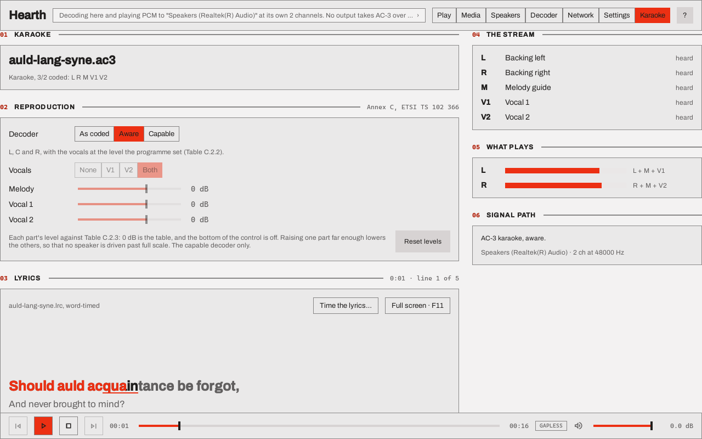
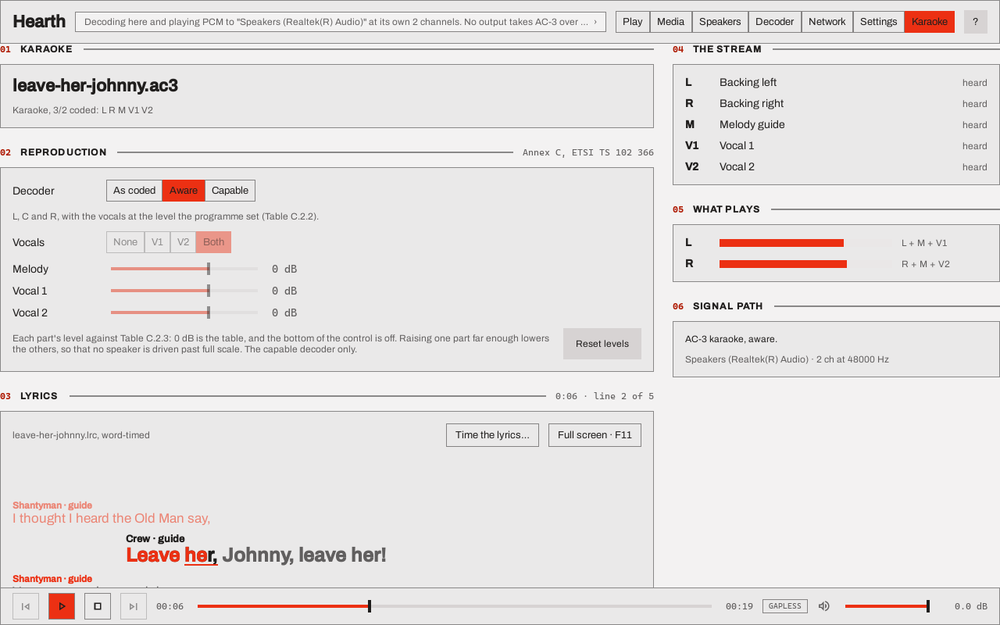
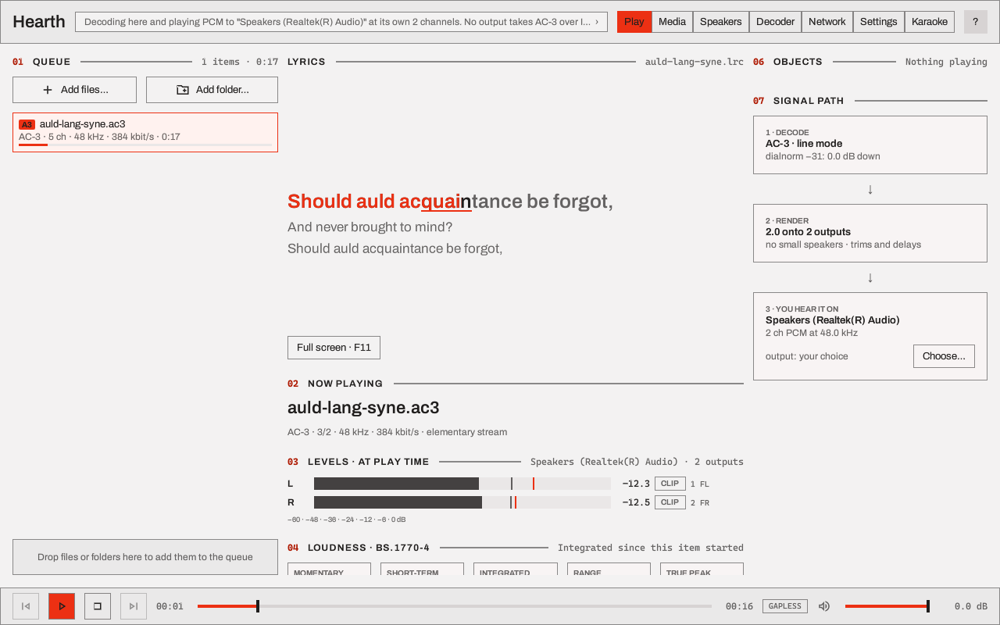
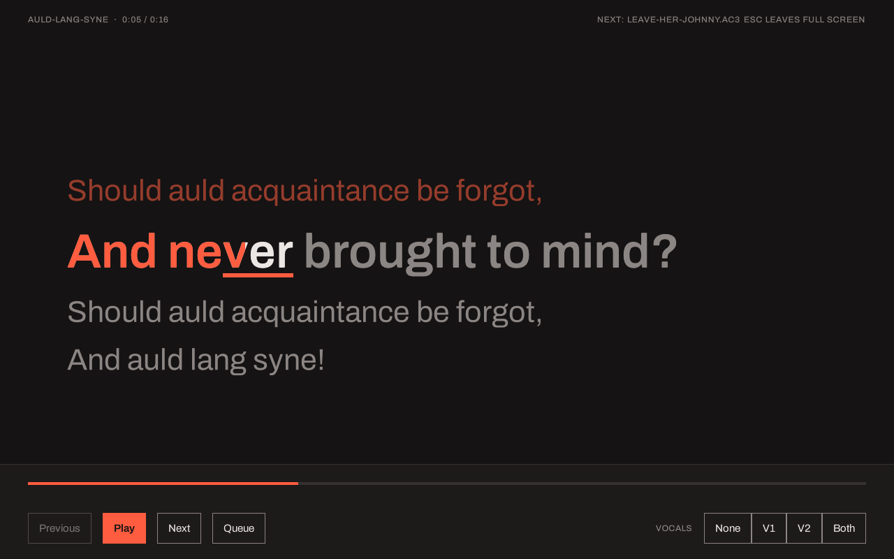
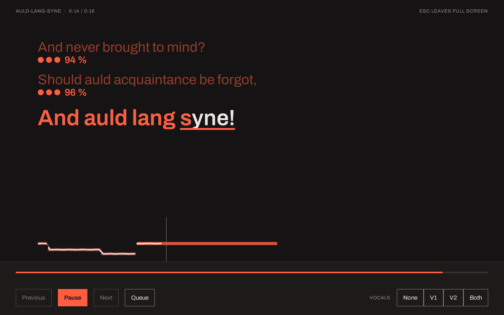
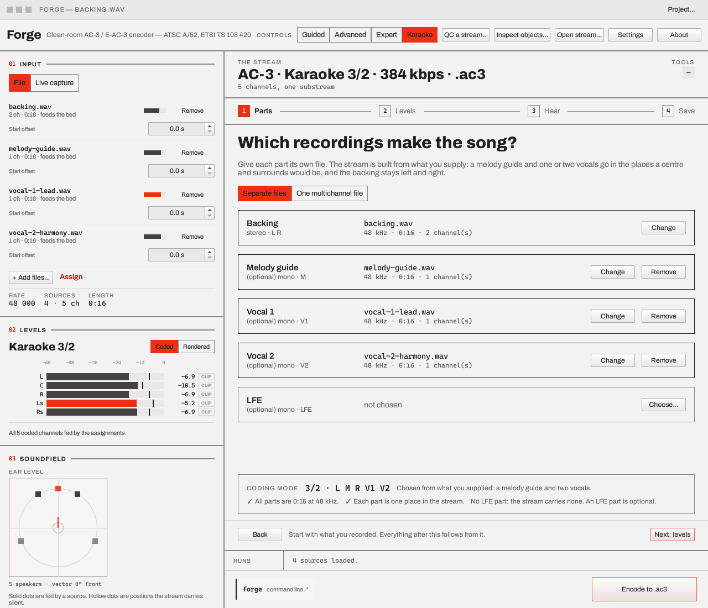
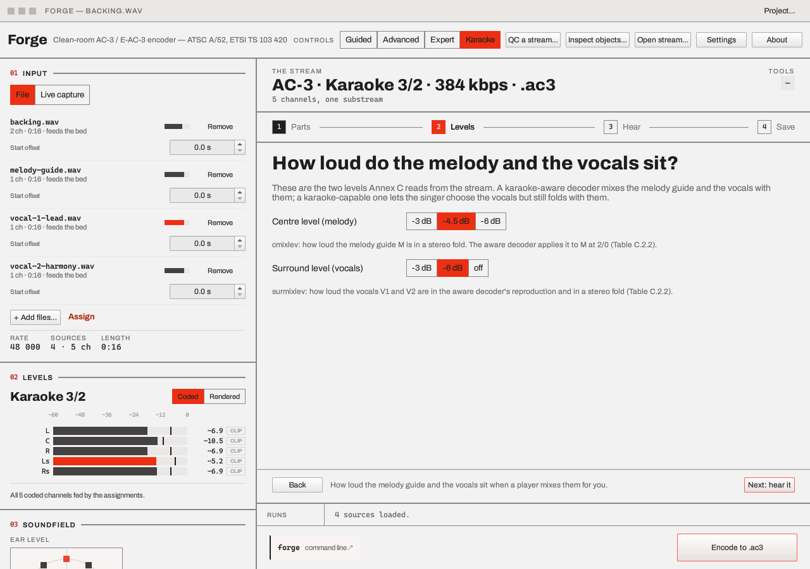
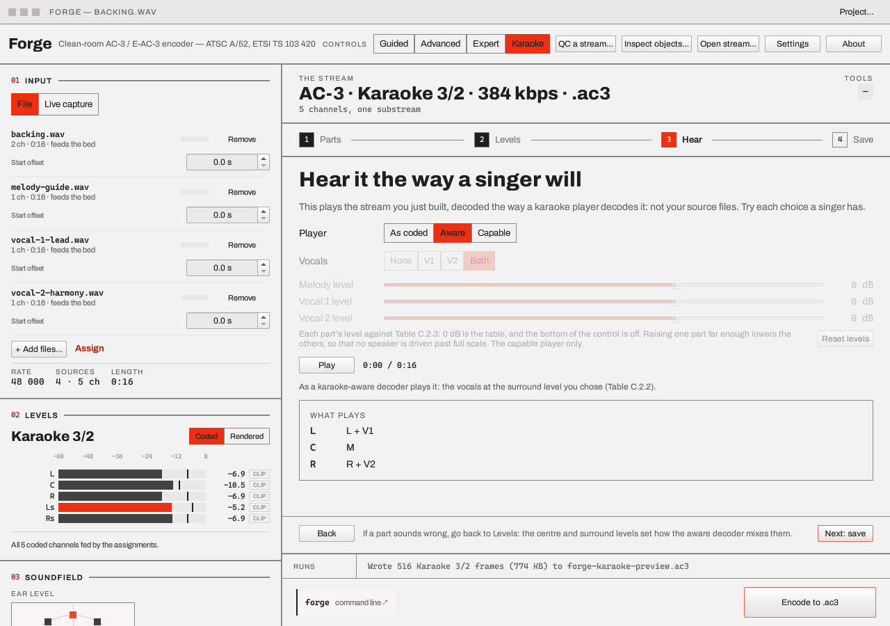
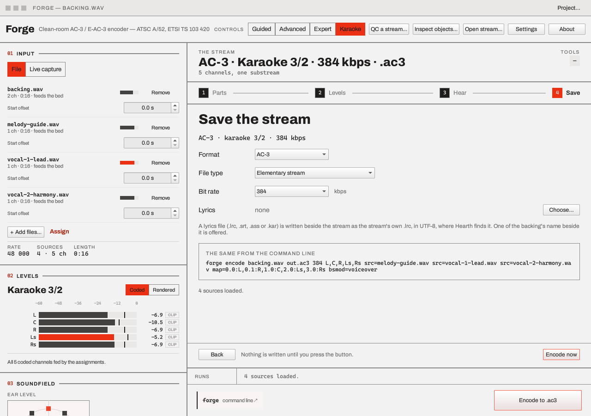

Karaoke¶
A karaoke stream is an ordinary AC-3 programme whose channels are parts, not speakers: the backing music, a guide melody, and one or two vocals. ETSI TS 102 366 Annex C defines it for AC-3; E-AC-3 carries the same service type and is reproduced the same way (E-AC-3 and AC-4). iclforge handles it end to end, in three places:
| You want to | Use |
|---|---|
| Play one, choose which vocals you hear, and sing along to its words | Hearth |
| Make one from a backing track, a guide melody and one or two vocals | The Forge GUI |
| Encode, probe and decode one in a script | forge |
There is no separate karaoke program: Hearth has a Karaoke page, and the Forge GUI has a Karaoke entry in its Controls switch.
Try it¶
examples/karaoke/auld-lang-syne/
is a karaoke stream with everything it is made of, so that nothing has to be built first. It is
"Auld Lang Syne", one verse, 16.5 s, generated by a script and not recorded:
- The parts: a stereo backing, a melody guide and two vocals as WAV files, and a Forge GUI project that opens them in the Karaoke flow. Open the project, press through Hear to listen to the stream as coded, aware and capable, change a part or a level, and Save to encode it again.
- The stream and its words:
auld-lang-syne.ac3andauld-lang-syne.lrc. Open the stream in Hearth and the words follow the singing, syllable by syllable.
The example's own README gives each step, and the forge encode line that writes the same stream.
A second example is built for duets:
examples/karaoke/leave-her-johnny/
is a traditional capstan shanty, one verse, 19.2 s, in which the shantyman and the crew sing
different lines and each is silent while the other sings, so that "V1 only", "V2 only" and
"both" each sound different and leave a different part for you to sing. Its project names the four
parts and nothing of how they are laid out; the Karaoke flow and forge project work that out.
What a karaoke stream is¶
It is a main service with bsmod 7 and a coding mode above 1/0. L and R carry the backing; the
slot a programme would use for its centre carries a guide melody (M), and the slots it would
use for its surrounds carry one or two vocals (V1 and V2):
| Mode | Parts, in coded order |
|---|---|
| 3/0 | L M R |
| 2/1 | L R V1 |
| 3/1 | L M R V1 |
| 2/2 | L R V1 V2 |
| 3/2 | L M R V1 V2 |
A player that knows nothing about karaoke plays the channels where they are coded, so the vocals come out of the rear speakers. Annex C defines two kinds of decoder that do better:
- A karaoke-aware decoder (Table C.2.2) plays L, C and R: the backing, the melody guide in the centre, and the vocals mixed in at the surround level the stream carries.
- A karaoke-capable decoder (Table C.2.3) does the same and lets the listener choose which vocals play: none, V1, V2 or both. With none, what is left is the backing and the guide melody, for singing along to. Annex C also leaves it room to move the level of each part, which iclforge's capable decoder offers.
E-AC-3 and AC-4¶
E-AC-3 carries the same service type: its bsmod is in the infomdat group (Annex E, Table
E1.2), and Annex G (Table G.2) gives the E-AC-3 descriptor a karaoke service type. Annex E defines
no reproduction for it. iclforge reproduces an E-AC-3 stream flagged this way as it does an AC-3
one, by analogy and as Dolby's own decoder does (How it is checked), where
the programme is one independent substream with no object layer. A programme with a dependent
substream or an object layer is played as coded: Annex C has no vocals for it. The levels the
reproduction uses are the stream's Lo/Ro mixing group (lorocmixlev and lorosurmixlev), or
-3 dB each where the stream has none, and forge eac3-encode writes the group whenever bsmod is
7 and the layout has a centre or a surround. A player that does not apply the reproduction plays
the vocals from the surround speakers, as it does an AC-3 stream.
AC-4 has no karaoke mode: its specification has no bsmod value for it, so there is nothing
to reproduce, and forge warns and ignores the choice on an AC-4 stream. The options for carrying
karaoke in AC-4
say what its presentations and objects could do; none is built.
Play it in Hearth¶
Open a karaoke stream in Hearth (a raw .ac3 or .ec3, or an MP4, Matroska or MPEG-TS file with
an AC-3 or E-AC-3 track) and choose the Karaoke page (Ctrl+7).

The "Auld Lang Syne" example, 1.8 s in and held there: the word being sung is part way through its fill. hearth --smoke-shot karaoke.png --page karaoke --open examples/karaoke/auld-lang-syne/auld-lang-syne.ac3 --seek 1800 (Hearth's command line). The picture is of 2026-10-12, before the page had its Microphone card, which is now the first card of the right-hand column.
Reproduction is the decoder's choice, kept across starts:
| Choice | What you hear |
|---|---|
| As coded | The channels as the stream codes them: the vocals come from the surround speakers. |
| Aware (the default) | L, C and R, with the vocals at the stream's own level. On two speakers this is the ordinary Lo/Ro fold, which Annex C says is the same thing. |
| Capable | As aware, with Vocals set to None, V1, V2 or Both. A single vocal plays in the centre with the melody; Both is V1 on the left and V2 on the right, so a stream with only V1 plays it on the left. A level for the melody and for each vocal moves it against the table, from 24 dB down (which is off) to 12 dB up. |
The levels are the capable decoder's alone, 0 dB each is the table as it stands, and they are kept across starts with the choice. Raising a part far enough lowers the others a little, so that no speaker is driven past full scale. Reset levels puts all three back. A part at the bottom of its control is off, and the page lists it as muted. A level has nothing to act on for a vocal the stream lacks or the Vocals choice leaves out, and its control is closed.
The page says which part each speaker plays under the choice made, and says in words when the choice does not apply:
- The stream is not karaoke: an ordinary programme, an AC-4 stream, or an E-AC-3 stream flagged karaoke whose programme has a dependent substream or an object layer, which Annex C has no vocals for. The page says which, and that the stream plays as coded.
- The stream is going to a receiver as a bitstream. That happens only with As coded chosen and a receiver chosen for passthrough in the output picker: the receiver decodes the stream, and unless it is karaoke-capable, V1 and V2 play from its surround speakers. With Aware or Capable chosen Hearth decodes the stream itself and sends the receiver PCM, so the choice is heard. The page's notice, shown while a bitstream goes out, says both, and has a button to choose another output.
- The output is a network group: a sink that lists the karaoke settings (and, for an E-AC-3
stream,
eac3among the codecs it reproduces karaoke for) and decodes as many channels as the stream has is sent the stream as it is and told your choice, and decodes it itself; one that does not (an ESP32-C6 decodes two channels) is sent PCM that Hearth has decoded with the choice applied. Every member plays one reproduction, at the same levels (see the Hearth page). - The stereo fold is Lt/Rt, for which Annex C defines no reproduction. The page has a button to use Lo/Ro, which does.
Lyrics¶
Hearth shows the words of the stream playing from a .lrc file with the same name in the same
folder: Auld Lang Syne.ac3 is read with Auld Lang Syne.lrc (the extension in any case). Where
there is no .lrc, a SubRip .srt of that name is read the same way (see below),
and failing that an Advanced SubStation Alpha .ass (see below),
and then a MIDI karaoke .kar (see below).
The file¶
LRC is an informal format; what Hearth reads is:
[ti:Auld Lang Syne]
[ar:Traditional]
[offset:0]
[00:12.00]<00:12.00>Should <00:12.60>auld <00:13.10>acquaintance <00:14.20>be <00:14.60>forgot,
[00:16.00]And never brought to mind?
| Part | Meaning |
|---|---|
[mm:ss.xx] |
A line, shown from that time. .xx is hundredths, .x tenths and .xxx milliseconds. Several tags give one text at several times (a repeated chorus). |
<mm:ss.xx> before a word |
The word-timed form: the word starts at that time and runs to the next word's tag, and a line's last word runs to the next line. |
[offset:+/-ms] |
Shifts every time. A positive value makes the lyrics appear sooner. |
[ti:] [ar:] [al:] [by:] [length:mm:ss] |
Kept for display. |
V1: V2: V1+V2: at the start of a line |
A duet: which vocal sings the line (see below). Not shown as text. |
[v1:name] [v2:name] |
What the file calls the two singers. |
The text is UTF-8, with or without a byte-order mark. A file in another encoding is not shown, and the page says so; playback is not affected.
A duet¶
A karaoke stream has two vocals, and a duet's lines can say which sings each:
[v1:Shantyman]
[v2:Crew]
[00:12.00]V1: Oh, the times are hard and the wages low
[00:16.00]V2: Leave her, Johnny, leave her
[00:20.00]V1+V2: It's time for us to leave her
The marker is the first thing after the time (before any <mm:ss.xx> word tag), in either case,
with spaces allowed round the + and after the colon. A line with no marker is for nobody in
particular. A plain file with no times may carry the markers too, so that a duet's text can be
marked before it is timed. Hearth's timing window sets each line's singer and the two names as the
file is timed, and saves them in the file (see Timing the lyrics).
Where a file marks its lines, the Karaoke page has two name fields. A name typed there is for this
run of Hearth only, never kept for a song, and comes before the file's [v1:] and [v2:], which
come before "V1" and "V2". Every line then says who sings it, three ways: the name above it, the
side (the second singer's lines are indented, the first's are not) and the colour. On a
karaoke stream the name also says whose line it is for you: guide when the vocal that is playing
sings it, you when it does not, and shared when it is a line for both and only one of the
two plays. A sentence under the names says the same for the whole file ("The vocal of Shantyman
plays: you sing the lines of Crew."), which is what choosing V1, V2, None or Both
under Capable changes.

"Leave Her, Johnny", 6.3 s in: the crew's line, indented and tagged guide because both vocals play. hearth --smoke-shot duet.png --page karaoke --open examples/karaoke/leave-her-johnny/leave-her-johnny.ac3 --seek 6300, of 2026-10-12 as the picture above is.
SubRip¶
A .srt file is read as lyrics too, which is what subtitle tools and ripped karaoke subtitles write:
1
00:00:12,000 --> 00:00:15,500
Should auld acquaintance
be forgot
2
00:00:20,250 --> 00:00:22,000
And never brought to mind?
Each cue is a line, and it ends where its cue ends, so the gap between two cues is a stretch where
nothing is being sung (which an LRC file, whose lines end where the next begins, cannot say). The
text lines of a cue are joined with a space; styling (<i>, <b>, <font ...>) and {...}
override blocks are dropped, and a position after the end time is ignored. The number above a cue
is not needed, a . is read for a , in a time, and cues out of order are put in order. There are
no words in a SubRip file, so there is no word fill: the whole line is emphasised as it is sung.
The encodings are the LRC reader's: UTF-8 with or without a byte-order mark, or UTF-16 with one.
Advanced SubStation Alpha¶
A .ass script is read as lyrics too, which is what subtitle-karaoke tools write, and its
karaoke tags are word times:
[Events]
Format: Layer, Start, End, Style, Name, MarginL, MarginR, MarginV, Effect, Text
Dialogue: 0,0:00:12.00,0:00:15.50,Default,,0,0,0,,{\k50}Should {\k30}auld {\k80}acquaint{\k20}ance
Each Dialogue: event is a line from its start to its end. Each {\k50} (and \kf, \K, \ko:
the same duration, drawn differently) begins a syllable that lasts that many hundredths of a
second after the one before; a syllable is a word of the line, so the fill moves by syllable, as
the script's own sweep does. Everything else is dropped: the other override tags ({\an8},
{\pos(...)}), the styles' fonts, colours and positions, and any event that draws ({\p1}) or is
a Comment:. \N is a space. The columns are the script's own Format: line, with the v4+ order
where it has none, and an event with no karaoke tags is a line with no words.
Two columns are read for what they say and not for how they look:
- Who sings. Where exactly two different actors (the
Namecolumn) are named on the sung lines, the ones with karaoke tags, they are the two singers, the one who appears first being the first vocal, and their names are the file's. Failing that, where exactly two different styles are used on the sung lines, those are the two singers; a style's name is its author's own label, so it is not shown as a name. One, three or none marks nobody, because it is not clear who is who. Hearth's duet view then tells each line's singer, as it does for aV1:orV2:marker in an.lrc. - Which line at one time. A line written on two layers, an outline under a fill, is one line. Where lines in different styles share a start and an end, a line that is not sung and is in a style of its own (a translation, a romanisation) is dropped beside the sung one, and where none is sung the style that is commonest in the file is the one read. Lines of one style at one time are all read, and a line that ends at another time than the sung one is a line of its own.
- A script made with Aegisub's karaoke templater. The templater keeps the timed karaoke it was
given as a
Comment:event with the Effectkaraoke, and writes the effects it makes from it asDialogue:events with the Effectfx, one for each syllable or decoration. Read as they stand, the effects would be the lyrics and the real lines would be skipped as comments. So where a script has a line whose Effect haskaraokein it, that line is read as sung, comment or not, and thefxlines are not read. The templater's own definitions (a comment whose Effect beginstemplate,codeormixin) are never read. A script with no such line reads as it did.
MIDI karaoke¶
A .kar file (a Standard MIDI File whose syllables are meta events) is read for its words, and only
its words: the music in it is not played or read. What is taken:
- the words from the track called
Words, where there is one, else from the file's Lyric events, else from its Text events; - the title and the artist from the first and second
@Tlines; the other@lines (@K,@L,@I,@V) are not words; - a
/begins a new line, and a backslash a new verse (a line too, here), and so does a line end in the text; - every syllable is a word of the line with its own start, from its tick through the file's tempo map (a tempo change on any track moves every later tick), so the fill moves by syllable. A syllable that begins with a space is the start of the next word: the space is joined to the one before it. A line ends where the next begins;
- a file whose time is counted in SMPTE frames (a frame rate and the ticks in a frame, where the other files count ticks in a quarter note) has a tick of a fixed length, and its tempo events mean nothing: 24, 25, 29.97 and 30 frames a second are the four rates the format defines, and all four are read.
A file with no words, that is cut short, or that counts SMPTE frames at some other rate says so. A
MIDI file carries no word of its encoding, and what is read is UTF-8 unless the program is told
the page: Latin-1 and the other code pages are not guessed at, so a Western karaoke file with
accented letters saved in Latin-1 (and Hebrew in Windows-1255) is refused with the reason, as an LRC
file in a code page is, until forge encode ... lyrics=<file> lyrics-encoding=<page> says which
page it is in (lyrics-encoding=). Plain
ASCII is UTF-8, and most are. Only the title, the artist and the words are checked (and, when a page
is named, read in it): the other @ lines are not shown, so a copyright or key line in a code page
does not refuse a file whose words are fine.
What is shown¶
- In a word-timed file, a word that has been sung is in the accent colour, a word not yet sung is muted, and the word being sung is underlined and fills in the accent from left to right as it is sung.
- In a file that times lines but not words, the whole line is emphasised as it is sung. No word times are invented for it.
- A file with no times at all is shown whole and is not followed.
- With no file, the page says which name it looks for.
The words follow the position of what is heard: the output device's own clock less its path's delay, so they stay with the sound on a Bluetooth speaker or a receiver with a long path.
They are on the Karaoke page, full screen (the singer view), and on the Play page: an item with lyrics, or a CD+G picture, gets a Lyrics card there beside the queue (in a window 1,580 pixels wide or more) or at the top of the monitor column (in a narrower one). An item with none gets no card, so the Play page is as it was for every other stream.

The Play page at its default size, 1.8 s into the example. hearth --smoke-shot play.png --page play --open examples/karaoke/auld-lang-syne/auld-lang-syne.ac3 --seek 1800.
A CD+G disc¶
A .cdg file with the same name is the picture of a karaoke disc that was ripped on its own,
the other half of an "MP3+G" pair: Song.mp3 and Song.cdg. When there is no lyrics file,
Hearth shows that picture where the words would be, with the proportions of the disc's 300 by 216
and as large as fits (in whole steps, so the small type stays crisp), drawn against the position of
what is heard and moved by the lyric delay as the words are.
The words of a disc are part of the picture. Nothing is read from it as text, so there is no fill, no line to follow and nothing to translate or copy, and the page says so.
When a lyrics file is beside the stream too, the words are shown, since they are what a
word-by-word fill and the delay can follow, and a Show choice (Words or Picture) appears in the
Lyrics card, and on the bar of the full-screen singer view, to show the disc instead. The choice is
for this run of Hearth: it is not kept for the song, it holds from one song to the next while
Hearth is open, and a song with only a lyrics file or only a disc is not changed by it. Choosing
the picture takes nothing from the lyrics: the file is still loaded, so the timing window, the
duet cues and the lyrics a board is sent are as they were. A .cdg that cannot be read beside a
lyrics file is not shown and not reported: the words are.
What is drawn is what the disc's own player draws: the screen preset and the border preset, the tile blocks and their XOR form, the scrolls by a tile (the preset form fills the gap, the copy form brings back what left), the smooth scrolling offsets within a tile (the picture is shown up to 5 pixels left and 11 up of where its memory has it, which is how a disc scrolls a line a pixel at a time), the 12-bit colour table of 16 colours, and the transparent colour (drawn as the backdrop, which is black: there is no video here for it to show). A packet that is not CD+G is skipped and keeps its place in time, and a file that is not a whole number of 24-byte packets, or has no CD+G packet in it, is refused with the reason (playback is not affected). The packets are not checked for parity: a rip has already been through the drive's error correction.
Keeping the words in sync¶
Settings, Playback, Lyric delay moves the words later (positive) or sooner (negative) by up to a
second in steps of 10 ms, on top of the file's own [offset:]. It is kept across starts. A file's
times are rarely right to the frame against a particular output.
Timing a file by hand¶
Time the lyrics… on the Karaoke page's Lyrics card opens a window that gives a file its times
as the song plays: Space as each line starts, then as each word starts, with your reaction time
taken off each press. A file that already has times opens with them, so the window is also where
one wrong line or word is put right: choose it, then stamp it again or move it 10 ms at a time.
Save writes the .lrc beside the song and keeps the file that was there once, as .lrc.bak.
Timing the lyrics has every step.

The example's own file in the timing window, 5.2 s in: every line has a time already, and its words are drawn solid because the file gives their times. hearth --smoke-shot timing.png --page timing --setting "microphone/takesFolder=C:/Users/you/Documents/Hearth takes" --open examples/karaoke/auld-lang-syne/auld-lang-syne.ac3 --seek 5200.
The singer view¶
F11, or Full screen on the Karaoke page's lyrics or the Play page's, opens the words alone,
large, on a dark screen. Esc leaves it, and Space pauses.

The example 5.2 s in, with the duet queued behind it. hearth --smoke-shot singer.png --page singer --open examples/karaoke/auld-lang-syne/auld-lang-syne.ac3 --open examples/karaoke/leave-her-johnny/leave-her-johnny.ac3 --seek 5200: a capture draws the view in the window, where F11 gives it the whole screen.
A position bar, Previous, Play/Pause, Next, Queue and the Vocals chooser stay at the bottom, so a singer can move about in the song, pause, skip, pick the next song or change which vocals play without leaving. Choosing a vocal there chooses the capable reproduction with it.
Moving about. Press the position bar, or drag along it: the words and the clock show the place
the bar is held at, and the song moves there when you let go, whether it was playing or paused.
Left and Right move it five seconds either way, and stop at the ends.
The queue. The strip at the top names the song that comes next. Queue, or Q, opens the
queue beside the words: the song that is playing is marked, and pressing another plays it from
its start. Q or the button closes it again.
In another player, in Crucible¶
Crucible reads the same .lrc file and shows the line being sung on its
Room page, against whichever application it is given the file for: a player with no words of its
own, or a browser. A player that publishes where it is in the song to the system's media controls
is followed from that, and one that does not is followed from a press of Start, which is how
Hearth is followed there. The room has a picture of it and the
details.
Sing into a microphone¶
The Karaoke page has a Microphone card. It shows you how close your pitch is to the tune while you sing, and it can keep a take of your voice. It records nothing unless you press Record a take, and nothing leaves your computer.
- It is off until you turn it on. Choosing an input does not open it, and neither does having used it last time. It closes when you turn it off, when you leave the page, and when the item ends or is changed. While it is on the card shows Microphone on, and the operating system shows its own sign as well.
- Choose the input from the list, or take the computer's default. Refresh looks again after you plug one in.
- Say whether you are wearing headphones. Through open speakers the microphone hears the backing as well as you, and a pitch score reads as nearly perfect for no singing at all, so the score is shown only when you have said you are wearing headphones.
- The level shows what the microphone hears. Too loud means a sample reached full scale. If nothing arrives the card says the microphone may be muted or the wrong input is chosen.
What it scores against¶
The card names the part it is scoring you against. A karaoke stream carries its tune in its own channels, so the melody guide (M) is used when the stream has one. If you have taken a vocal away (Capable, with the vocals you chose), the vocal you took away is the one you are replacing, and that is the one used. A stream with no clear tune in the part, a stream that is not karaoke, and the other formats, have no melody to score against, and the card says so; it still shows the pitch you are singing and how sharp or flat it is.
What the score is¶
The share of the tune's time during which your pitch was within a semitone of it, in any octave. It hears pitch and nothing else: not the words, not the timing, not the feeling. A singer on pitch and out of time with the words scores well on it. The card also says when you are consistently behind or ahead of the tune, which is usually a delay in the microphone and not in you.
Two things on the card change what "within" means, and the card says when either is in use:
- How close counts is a semitone unless you choose otherwise: close is half a semitone (50 cents), and loose is a whole tone (200 cents). It is kept, and it applies to the marks and the summary as well as the score so far.
- Score against my key is for singing a whole song a little sharp or flat of the tune: your own key is taken from your first sung notes (it needs about twenty of them) and allowed for, so that you are judged on the shape of your melody. The card says how far you are from the tune's key while it is in use, and the summary says it was. It is off every time Hearth starts, because a score that has allowed for your key is not the same score.
What you see while you sing¶
- The pitch ribbon, under the pitch line on the card and under the words in the singer view
(
F11): the tune as a ribbon of notes moving past a mark for now, and your voice as a line over it. Where your voice is within the tolerance of the tune the line is thick and solid; where it is not it is thin and dashed, so the difference does not depend on colour. A voice an octave away is drawn on the tune's octave, as it is scored, so the line is where the notes are. When you are not voiced the ribbon says Listening… and draws no line. - A mark under each line you have sung: three dots and a percentage, in the lyrics on the page and in the singer view. Three dots is 75 % or more, two is 45 % or more, one is less. Where the levels fall is presentation and not measurement: the percentage is the figure. A line the tune has no notes in has no mark, which is not a score of zero. A line you were not voiced for (under a fifth of its notes' time) says not sung in words and carries no number, since that is not the same as singing it badly. Without your headphones answer there are no marks at all.
- A summary on the card when it ends: Last performance gives the pitch score, how much of the tune's time you were voiced for, how sharp or flat you were on average and whether you were behind or ahead, and what it was compared with: the part, the tolerance, octaves ignored, and that lines with no notes were not scored. It stays until you turn the microphone on again or choose another song. It is shown there and kept nowhere: nothing is ranked, named or sent.

The singer view 14.9 s into the example, with the performance going on: the marks under the lines
already sung, and the ribbon with the voice on the tune. hearth --smoke-shot singing.png --page
singer --open examples/karaoke/auld-lang-syne/auld-lang-syne.ac3 --sing
examples/karaoke/auld-lang-syne/parts/vocal-1-lead.wav --seek 14900 (Hearth's command
line). There is no singer: the example's own lead vocal is the
microphone, sung along to the song as the song is heard, and the song goes to an output that plays
to nothing, so the picture is taken with no microphone opened and no sound made.
A song you sang only part of scores low as a whole, because the score is over all of the tune's time. The marks say which lines were the ones.
The delay¶
A microphone's sound reaches the program a little after it was sung, and some take a tenth of a second or more (a webcam's microphone measured about 130 ms through the whole path, in the Windows shared mode that Hearth uses). The Microphone delay slider is how long, and Move your timing is for the rest: raise the delay if you are told you are behind the tune and are not.
A take¶
With the microphone on, Record a take keeps your voice. The card shows Recording and how long it has run, which is a second sign beside Microphone on, since having the microphone on is not recording. Stop recording keeps it, and turning the microphone off, leaving the page or the item ending does the same.
- It is your voice alone, not the backing: the microphone's own sound mixed to one channel, at the microphone's rate, as a lossless FLAC file at 24 bits. It can be placed against any copy of the backing and re-mixed. Through open speakers the backing is in it too, which is the other reason to wear headphones.
- A small file beside it,
Song - 2026-10-12 211500.take.json, says which item it was, where in the item its first sample was sung (taken from where the song was when the sound reached the microphone, less the microphone's delay, plus the timing you moved), and the alignment in force, so that any editor can place it and you can move it if you disagree. - Where it goes is shown on the card and changed with Choose…: your documents, in a folder called "Hearth takes", unless you chose another. The folder is not made until the first take. Takes are never put beside the song file.
- The last take is offered with Show in folder and Delete this take, which removes the file and its description.
- Your takes lists what is in the folder, newest first: the five newest, and how many more there are. Each has Delete, which asks again (Delete for good, or Keep) before it removes the file and its description, because a take cannot be got back. Only takes Hearth made are listed: a file with no description beside it is not one, and is never offered for removal.
Make a karaoke stream with your voice in it¶
A take is a vocal part, and the Forge's Karaoke flow takes any mono file as Vocal 1 or Vocal 2. A take is a recording of one person at one time, so four things need handling first:
- It is FLAC, and the Forge reads WAV. Convert it with any tool that reads FLAC; the lines below use ffmpeg.
- It is at the microphone's rate, often 44.1 kHz. The Forge GUI resamples a part to the
backing's rate and says so;
forge encoderefuses a source at another rate, so convert it. - It starts partway into the song.
item_start_msin the.take.jsonis where, in milliseconds (12340 is 12.34 s), with the microphone's delay and any timing you moved already taken off.nullmeans the take could not be placed, and you place it by ear. - It is shorter than the song. The Forge holds a part's last sample past the part's end, which is not silence: end the take on silence and as long as the backing. The command below does.
In the Forge GUI, give the backing and the melody guide as their parts, the take converted to WAV
as Vocal 1, set its Start offset to item_start_ms divided by 1000, and save.
From the command line, from a stream you sang to (a 3/2 stream with a melody guide and two vocals:
forge probe says the layout) and a take:
forge decode song.ac3 parts.wav
ffmpeg -i "Song - 2026-10-12 211500.flac" -af "adelay=12340,apad=whole_dur=213.5" -ar 48000 -c:a pcm_s24le take.wav
forge encode parts.wav mine.ac3 320 L,C,R,Cs src=take.wav map=0.0:L,0.1:R,0.2:C,0.3:none,0.4:none,1.0:Cs bsmod=voiceover
adelay is in milliseconds (the take's item_start_ms) and apad=whole_dur is the song's length
in seconds (forge probe shows it as the duration); together they make the take as long as the
backing, silent before and after it. -ar is the backing's rate. In forge encode, parts.wav
is source 0: its channels 0, 1 and 2 are L, R and the melody guide, and channels 3 and 4, the
stream's own vocals, go to none. The take is source 1 and takes the surround, which one vocal
makes a 3/1 stream with (L,C,R,Cs, 320 kbit/s). A stream with one vocal has no channel 4, so leave
0.4:none out.
This decodes the stream and encodes it again, which is a second generation of AC-3 for the backing. If you still have the files it was made from, give those to the Karaoke flow instead. A one-click "save my performance as a karaoke stream" in Hearth is not built: the plan holds it until this has been tried (D12). A take made through open speakers has the backing in it as well as your voice, and is a recording of somebody else's work: keep it for yourself.
What it does not do¶
- It does not play your voice back to you. A microphone through the operating system's own audio path adds a tenth of a second on common equipment, which is too late to sing along with; use your headset's own monitoring if it has one.
- It does not send your voice to other speakers or other devices.
- It cannot tell a singer from a loud speaker, which is why the headphones answer matters.
Make one in the Forge GUI¶
Choose Karaoke in the Controls switch. Four steps build the stream from the recordings it is made of. The pictures are of the example's project, opened with Project… in the title strip.
1 · Parts. Give each part its own file: a stereo backing, and optionally a mono melody guide, Vocal 1, Vocal 2 and an LFE. Or give one multichannel file whose WAV speakers are already named. The page shows the coding mode the parts make, why, and what is wrong with anything that cannot be used.

forge-gui --smoke-shot parts.png project=examples/karaoke/auld-lang-syne/auld-lang-syne.forgeproj karaokeStep=parts height=1100
2 · Levels. The centre level (the melody guide in a stereo fold) and the surround level (the vocals), which an aware decoder applies.

forge-gui --smoke-shot levels.png project=examples/karaoke/auld-lang-syne/auld-lang-syne.forgeproj karaokeStep=levels
3 · Hear. The stream is encoded and played back the way a karaoke player decodes it: as coded, aware, or capable with the vocals you choose and a level for each part. It plays the encoded stream, not your source files.

forge-gui --smoke-shot hear.png project=examples/karaoke/auld-lang-syne/auld-lang-syne.forgeproj karaokeStep=hear: the capture waits for the stream to be built, and plays nothing.
4 · Save. The format (AC-3, the default, or E-AC-3), the file type (the raw stream, or
Matroska, MP4 or MPEG-TS), the bit rate, the lyrics file that goes beside the stream, the
equivalent forge encode (or forge eac3-encode) command, and the encode.

forge-gui --smoke-shot save.png project=examples/karaoke/auld-lang-syne/auld-lang-syne.forgeproj karaokeStep=save
Each coded channel is written into the same draft the other tiers edit, so switching to Expert
afterwards shows the same bed, bsmod and assignments. The Forge GUI guide has the details of each
step and of what a part may be: Forge GUI, Karaoke.
From the command line¶
Encode: a stereo backing and a melody guide and two vocals as five coded channels, with bsmod
set to 7 (the token is voiceover, which at a layout above 1/0 is the karaoke main service). The
sources are mapped to bed positions with src= and map=:
forge encode backing.wav out.ac3 384 L,C,R,Ls,Rs src=melody.wav src=lead.wav src=harmony.wav \
map=0.0:L,0.1:R,1.0:C,2.0:Ls,3.0:Rs bsmod=voiceover
A single multichannel WAV whose speakers are named needs no map=.
E-AC-3 takes the same sources, mapping and bsmod. forge eac3-encode has its coding tools
positional (none here) before the layout, and writes the stream's Lo/Ro mixing group, which is
where a decoder reads the levels of the reproduction:
forge eac3-encode backing.wav out.ec3 384 none L,C,R,Ls,Rs src=melody.wav src=lead.wav src=harmony.wav \
map=0.0:L,0.1:R,1.0:C,2.0:Ls,3.0:Rs bsmod=voiceover
Probe:
$ forge probe out.ac3
...
bsmod 7 (karaoke)
layout 3/2 (acmod 7, lfeon 0)
renders 5 channel(s): L C R Ls Rs
Decode, as an aware decoder (karaoke) or a capable one with a choice of vocals
(karaoke=none, karaoke=v1, karaoke=v2 or karaoke=v1+v2), to L, C and R:
channels=2 or channels=1 gives the 2/0 or 1/0 reproduction. downmix=ltrt is refused with
karaoke, as Annex C defines no Lt/Rt reproduction. A stream that is not karaoke is decoded as
coded, and the report says so. An E-AC-3 karaoke stream decodes the same way
(forge decode out.ec3 aware.wav karaoke), and the report says the reproduction is applied to
E-AC-3 as Dolby's decoder does. The library form is OutputConfig::karaoke and
OutputConfig::karaoke_vocals; see Decoding.
forge monitor takes the same choice and plays the reproduction on the output:
forge monitor out.ac3 karaoke=none # L, C, R: the backing and the melody, for singing along
forge monitor out.ac3 karaoke=v1+v2 # V1 left, V2 right
The capable decoder's levels are karaoke-melody=<dB>, karaoke-v1=<dB> and karaoke-v2=<dB> on
both commands: each part against Table C.2.3, 0 dB the table, up to 12 dB louder and -24 or off
at the bottom, the span and the defaults of Hearth's sliders.
forge decode out.ac3 sing.wav karaoke=none karaoke-melody=-6
forge monitor out.ac3 karaoke=v1 karaoke-v1=-12 karaoke-melody=3
They move nothing under the aware reproduction, so a level without a choice of vocals
(karaoke=none, v1, v2 or v1+v2) is refused.
On an output narrower than the stream, which monitor folds to unasked, the 2/0 reproduction
plays. forge play applies the choice where it decodes (its PCM fallback), and forge spdif
and forge play's bitstream legs hand the coded stream on: they accept karaoke and say it is
not applied, since a receiver reproduces the stream. AC-4 is ignored with a warning by all of
them, and forge spatial ignores the choice with its own: it places an E-AC-3 stream's objects
and has no karaoke bed.
From a program¶
The reproduction and the lyric reader are in the libraries, so a program of your own can use them:
| You are in | The reproduction | The lyrics |
|---|---|---|
| C or C++ through the C API | iclforge_decoder_create_with_karaoke(), C API |
iclforge_lyrics_parse() and its cursor, C API |
| Python | DecoderConfig(karaoke=...), Python |
iclforge.lyrics |
| Rust | Decoder::with_karaoke, Rust |
iclforge::lyrics::Lyrics |
| A browser or Node (WebAssembly) | FoldOptions.karaoke, the npm package |
parseLyrics in the demo's module, which the decode demo's Words panel uses |
| C++ | OutputConfig::karaoke and its levels, Decoding |
iclforge::lyrics, libs/lyrics |
All of them take the same choices (as coded, aware or capable; the vocals; the three part levels in
dB over -24 to +12, where the bottom is off) and the same bytes of a lyrics file, and give the same
samples and the same lines as forge decode and Hearth do.
What it does not do¶
- Aligning words to the sound. Hearth's timing window (Timing the lyrics) takes word times from your presses, and an estimate by the letters of a word is only where a press starts from. A forced aligner is outside software, and Timing a song with a forced aligner runs one and reads its result in.
- Reading a lyrics file in a code page, in Hearth and Crucible. UTF-8 and UTF-16 are read there;
Latin-1, Windows-1255 and the other encodings are named and not guessed at. Forge reads one when it
is told the page (
lyrics-encoding=, or the Code page list on the Karaoke flow's Lyrics row, which shows how the page chosen reads the first lines) and writes the words beside the stream as UTF-8, which every player reads, so a file in a code page is brought in once, at the encode. A MIDI karaoke file has no way to say its encoding; naming the page is how to read it. - Text from a CD+G disc. Its words are pixels, so Hearth shows the picture and cannot follow the words.
- A screen on a sink that has not been run. A board that decodes for itself is sent the lyrics and where the sound is in them, follows them on its own clock and reports the line. The P4 firmware also draws them, with the colour moving as the song does, on a 7-inch panel (An ESP32-P4 sink): drawn and measured on a board with no panel, not yet run on one, and without a microphone, scoring or recording.
- Karaoke in AC-4. Its specification has no karaoke mode, so nothing is reproduced for it.
- Knowing what a receiver does with E-AC-3. Annex E defines no reproduction and no TV or receiver was tried here: Dolby's reference decoder reproduces an E-AC-3 karaoke stream, and a player that does not reproduce it plays the vocals from the surrounds.
- A microphone on a board or on Android. The microphone, the pitch score and the takes are in Hearth's desktop player and the browser demo (Sing into a microphone). The board's part of the plan is not built.
How it is checked¶
Two things stand behind it. The reproduction is held to the annex's own tables, transcribed
independently of the code: every mode is encoded with a tone in each part and decoded under each
reproduction and each choice of vocals, and the tones on each output are what the table says. And
Dolby's reference decoder reproduces karaoke for AC-3 and for E-AC-3, which is the one outside
decoder to compare with: tools/checks/verify_karaoke_oracle.py encodes a tone-per-channel stream
both ways, decodes it with forge decode and with the Reference Player's dlbac3dec, and compares
what each output channel carries as ratios. The player is licensed, so the script runs locally and
not in CI, and its measured ratios are constants in the library's tests
(libs/ac3/tests/decoder/test_eac3_karaoke.cpp). There is still no karaoke stream from anyone
else: Dolby's encoder (DEE) cannot write bsmod 7. See Verification.